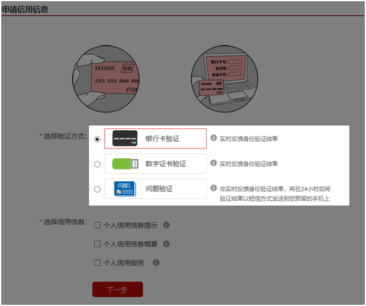
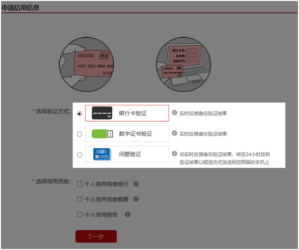

如何获取征信报告？
注册并登录“中国人民银行征信中心”官网（https://ipcrs.pbccrc.org.cn/），选择“问题验证”、“银行卡验证”或“数字证书验证”，您在选择验证方式并提交申请的24小时后，人行征信中心会向您发送含有身份验证码的短信。您可以在收到身份验证码的7天内，返回官网填写并提交、完成征信授权。若获取不到征信验证码，建议联系人行征信客服电话：400-810-8866。


注册并登录“中国人民银行征信中心”官网（https://ipcrs.pbccrc.org.cn/），选择“问题验证”、“银行卡验证”或“数字证书验证”，您在选择验证方式并提交申请的24小时后，人行征信中心会向您发送含有身份验证码的短信。您可以在收到身份验证码的7天内，返回官网填写并提交、完成征信授权。若获取不到征信验证码，建议联系人行征信客服电话：400-810-8866。

为什么收不到征信身份验证码？
正常情况下，会在您提交查询申请的24个小时后，将身份验证码反馈给您。若您在申请查询24个小时后仍未收到反馈结果，可能是由于以下原因：一是您注册时填写的手机号码不正确；二是您的手机对短信进行了拦截，或短信接受出现异常；三是您在提交查询申请时，使用问题验证方式，经审核您未通过身份验证。您可以用注册时填写的登录名和密码登陆人行征信中心（https://ipcrs.pbccrc.org.cn/）平台会显示您的信用信息产品处理状态。
正常情况下，会在您提交查询申请的24个小时后，将身份验证码反馈给您。若您在申请查询24个小时后仍未收到反馈结果，可能是由于以下原因：一是您注册时填写的手机号码不正确；二是您的手机对短信进行了拦截，或短信接受出现异常；三是您在提交查询申请时，使用问题验证方式，经审核您未通过身份验证。您可以用注册时填写的登录名和密码登陆人行征信中心（https://ipcrs.pbccrc.org.cn/）平台会显示您的信用信息产品处理状态。
忘记征信账号或密码怎么办？
如果您忘记征信账号，请登录人行征信中心https://ipcrs.pbccrc.org.cn/，点击 【找回登录名】按照提示进行找回。
如果您忘记征信账号，请登录人行征信中心https://ipcrs.pbccrc.org.cn/，点击 【找回登录名】按照提示进行找回。